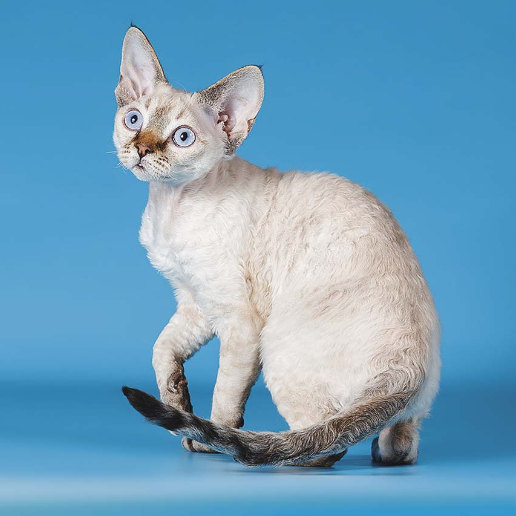

Девон-рекс
| Родина и время возникновения | Порода признана | Окрас |
| Великобритания, 1960 г. | CFA, TICA, GCCF, FIFe. | Все окрасы, включая дымчатые варианты, колорпойнт и тебби. |
Характер
Девон-рексы умны и легко поддаются обучению. При должном подходе их можно научить простым трюкам. Обучение следует начинать с раннего возраста, пока у животных не развились свои собственные привычки. Животные способны чувствовать настроение человека и в ответ на заботу, внимание отвечают сильной привязанностью, лаской. Кошка в большинстве случаев выбирает кого-то одного из членов семьи, к кому чаще подходит, ласкается, играет.
Они активны и игривы, не любят долго находиться в одиночестве. Животные с удовольствием играют, ласкаются, если хозяин уделяет им время. Особенно любят лежать на коленях, спать вместе с хозяином. Но молодые и взрослые особи легко увлекаются игрой, процесс может затянуться надолго. Благодаря этим качествам представители породы ладят с детьми и другими домашними животными.
Даже в зрелом возрасте питомцы сохраняют игривость. Они предпочитают общество людей, с ними всегда весело. Вполне комфортно чувствует себя в шумной обстановке, в доме, где проживает большая семья, но грубое обращение не терпят.
Любознательные кошки проявляют интерес ко всему, что их окружает. Они мило мурлычут и издают странные звуки, когда птицы за окном становятся объектом внимания.
Здоровье
За время существования породы в процессе гибридизации устранены многие проблемы со здоровьем. Современные представители породы отличаются крепким здоровьем, но часто животные страдают от стоматологических проблем. Поэтому девон-рексы нуждаются в сбалансированном питании и регулярном уходе за зубами.
У представителей породы редко встречается гипертрофическая кардиомиопатия. Из наследственных заболеваний кошки склонны к миопатии, врождённому гипотрихозу.
Девон-рексы склонны к перееданию, поэтому, если не ограничивать потребление пищи, кошки быстро набирают лишний вес.